About TEAFAIRY LIMITED
TEAFAIRY LIMITED is a company registered in England and Wales (company number 17464103) and operates the Tea Fairy (茶仙子) brand and the TeaFairy World app.
Meet Tea Fairy Bao Lili

Bao Lili (鲍丽丽), known as “Tea Fairy” (茶仙子), is a China Tea Culture Promotion Ambassador and the founder of Tea Fairy. Over 26 years of tea practice she has visited 139 tea mountains and worked with 68 intangible cultural heritage inheritors. She has presented Chinese tea at four World Expos — Shanghai, Milan, Dubai and Osaka.
Her signature tea is 醒悟 Tea Awakening, a 2014 Yunnan ancient-tree Pu’er. As TeaFairy World’s lead tea-brewing instructor, she teaches tea lovers around the world to brew tea step by step.
收藏岁月，醒悟人生 — Collect the years, awaken to life.
不以香艳立世，只以醇厚传家
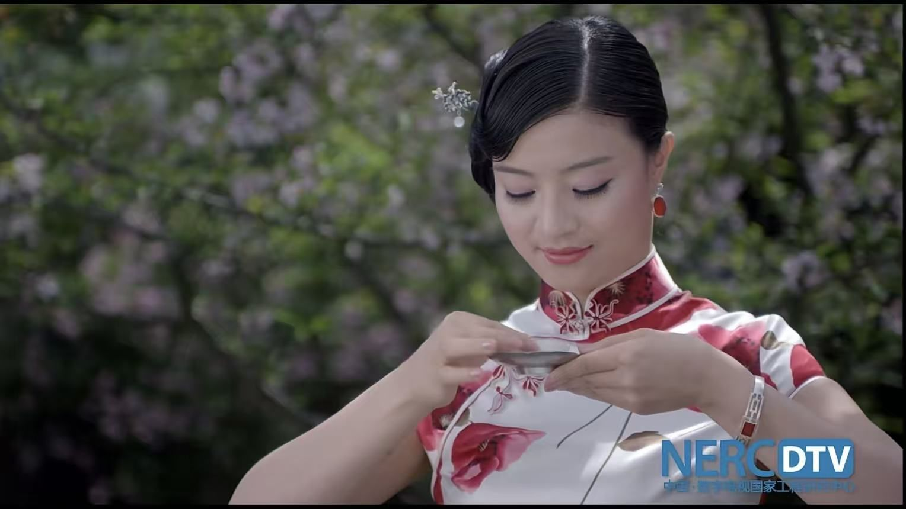

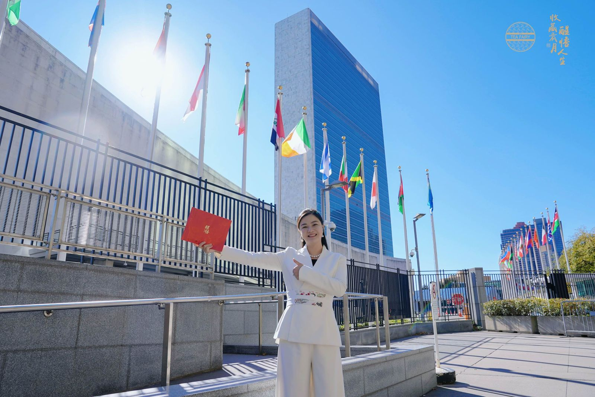
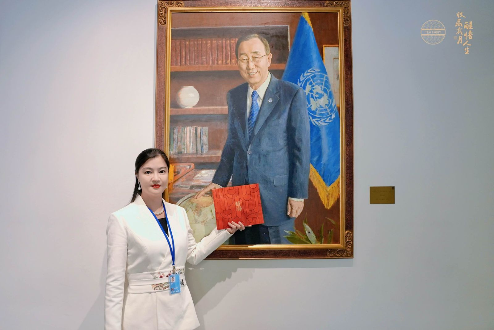
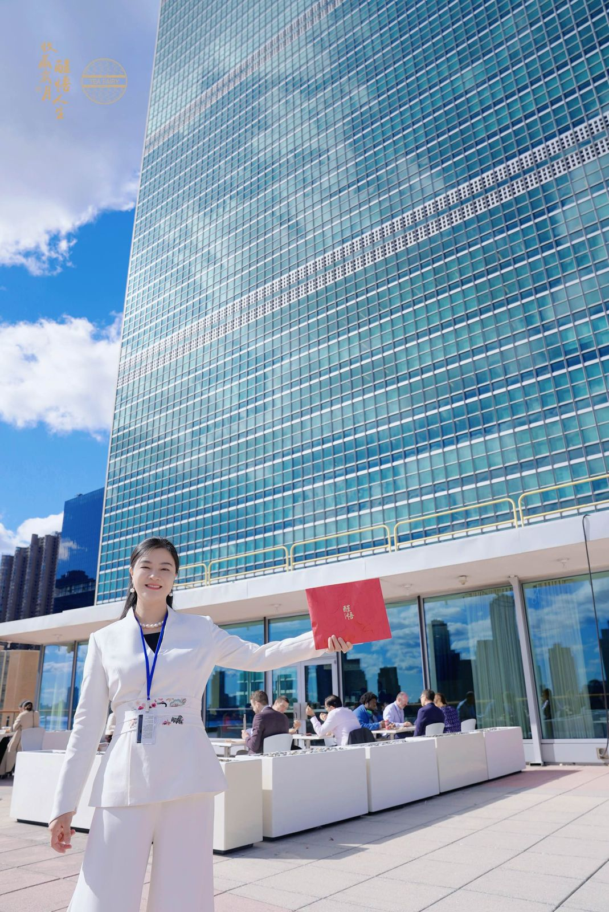
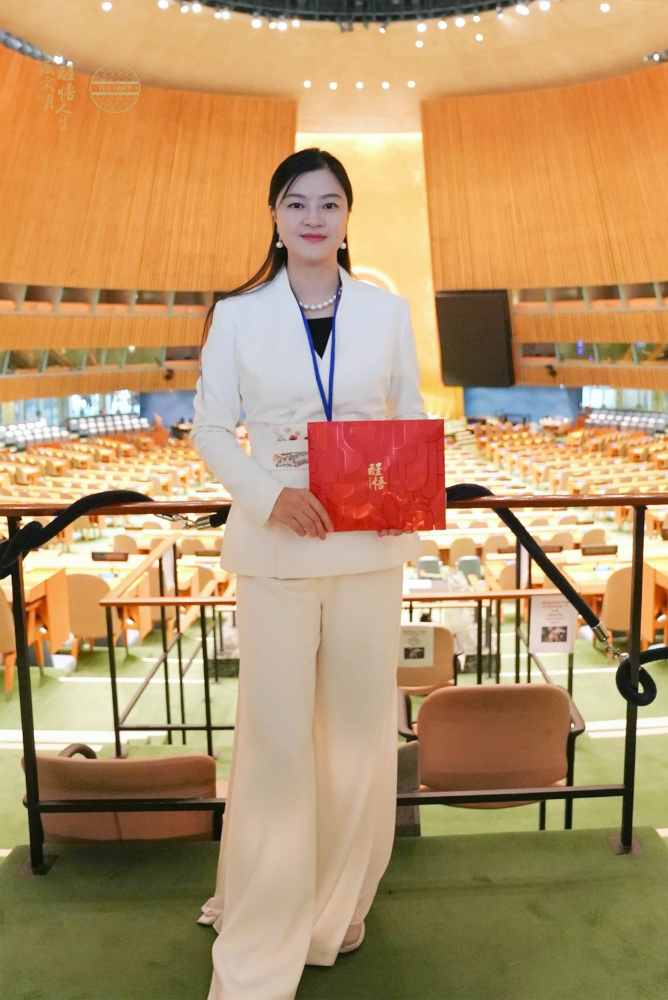
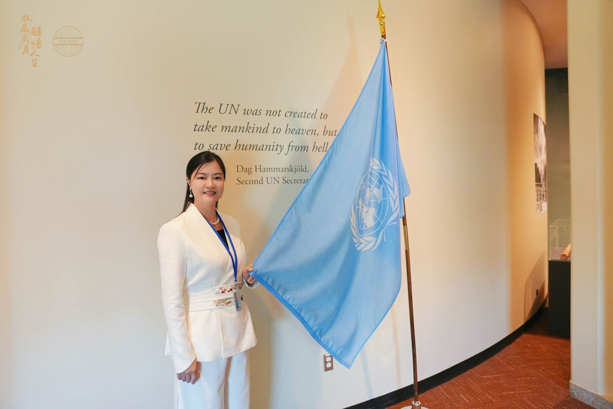
Tea & Art
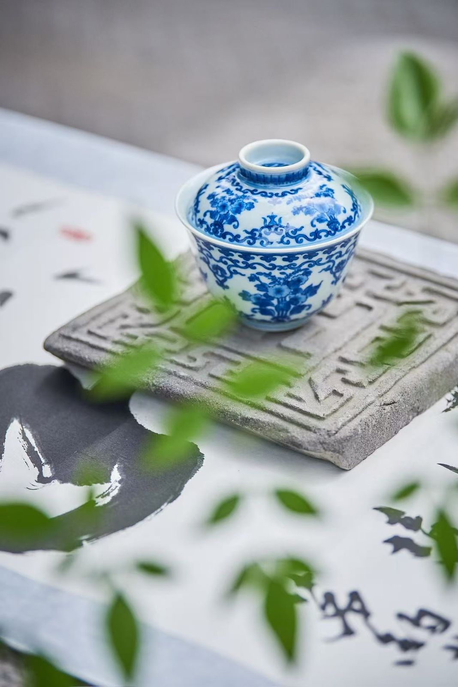
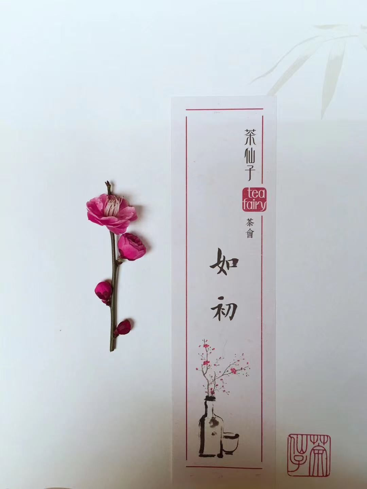
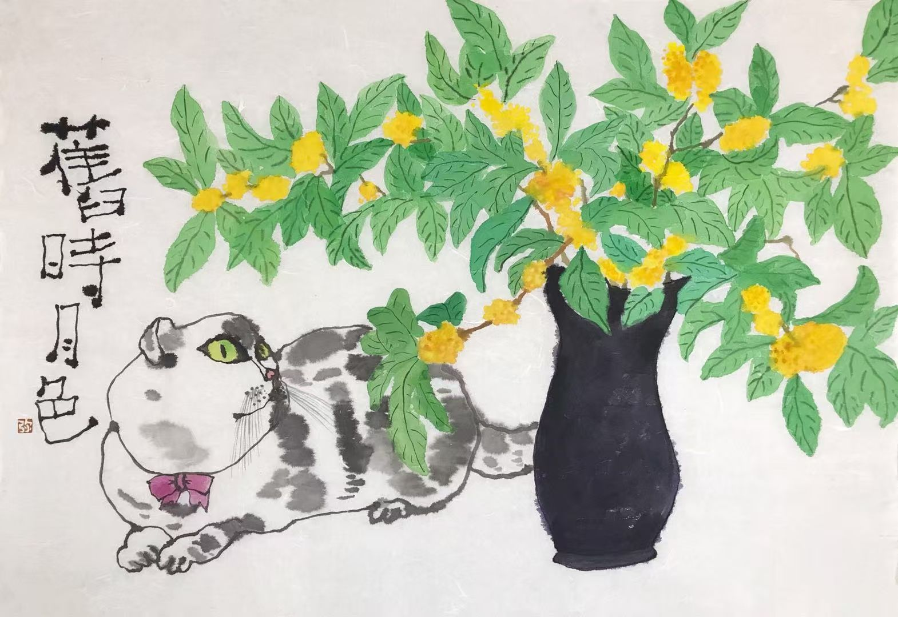
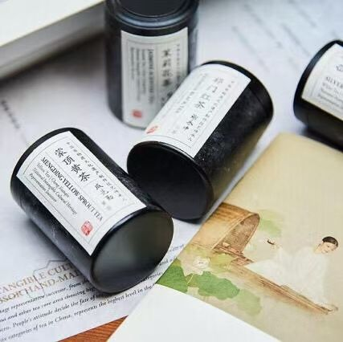

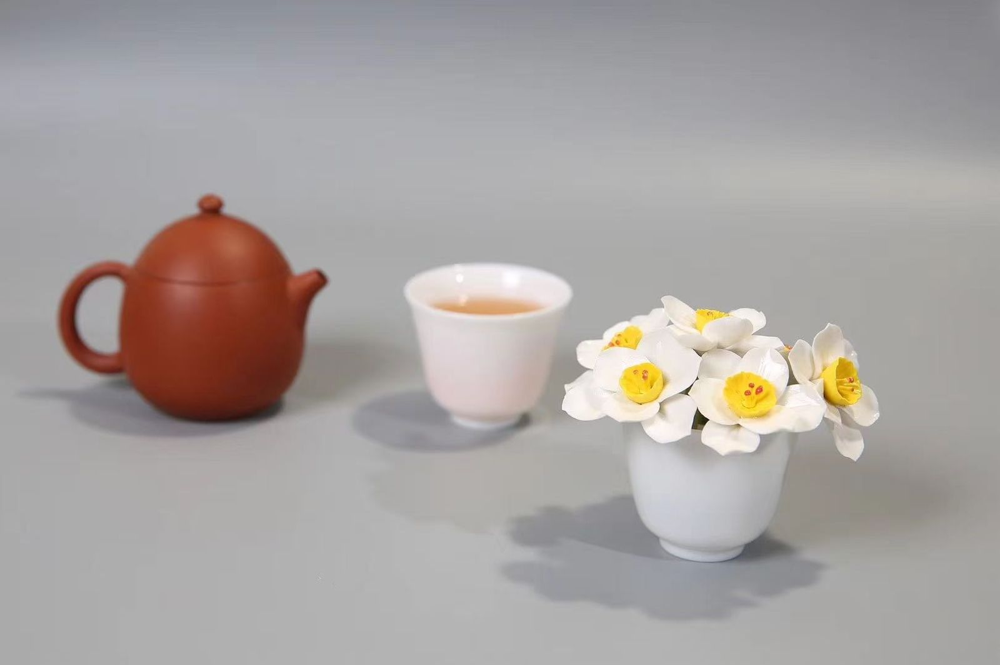
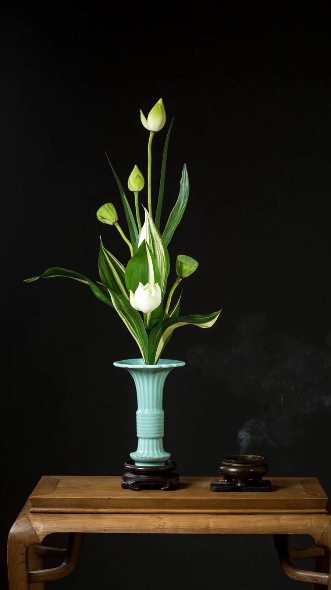
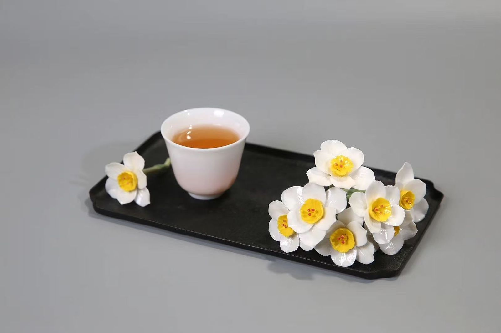


Our mission
To teach tea lovers at home and abroad to brew tea together and to fall in love with drinking tea. 收藏岁月，醒悟人生.